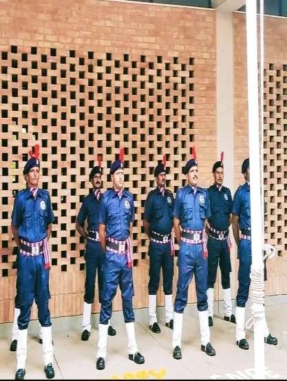
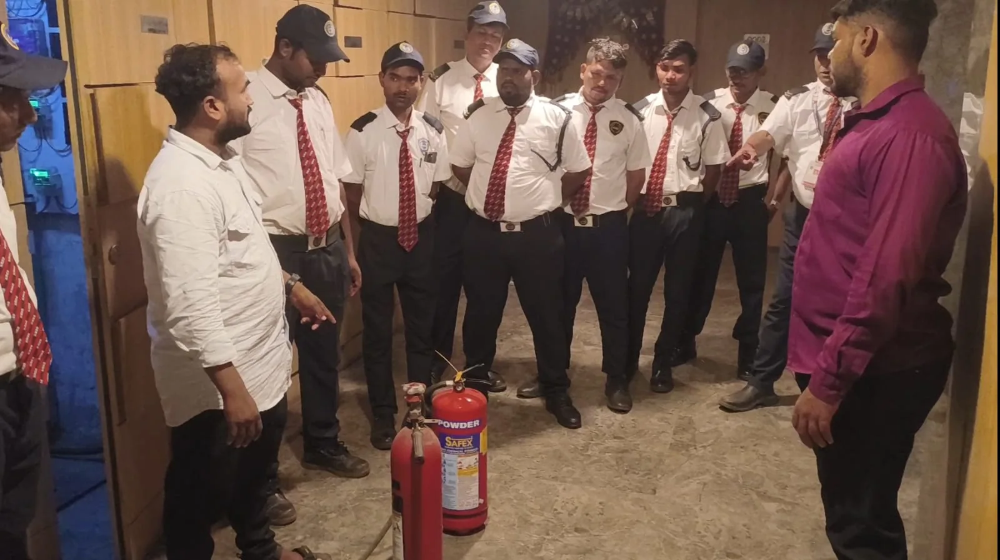
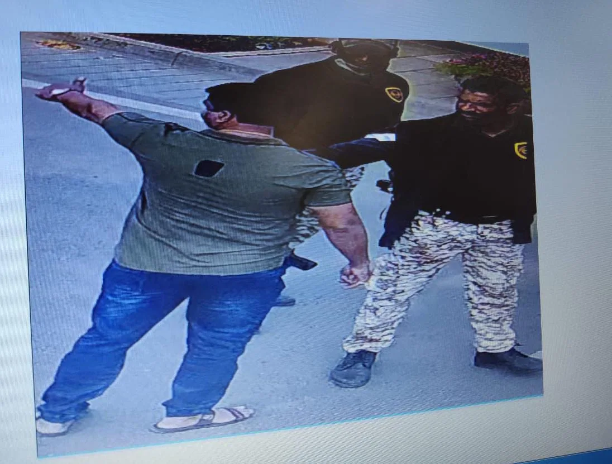
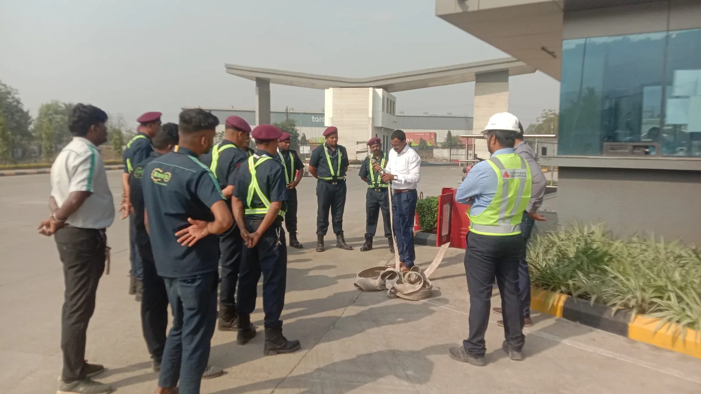
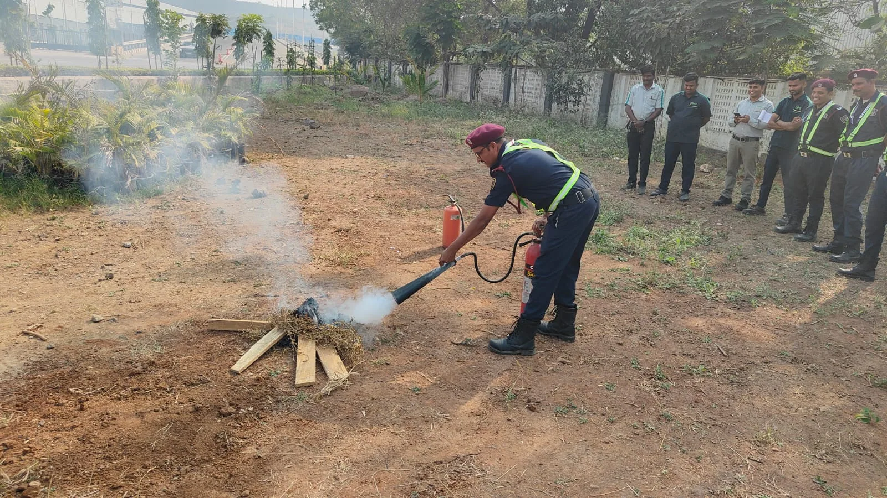
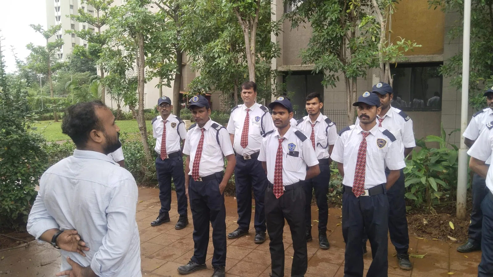
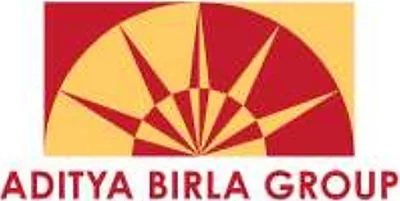
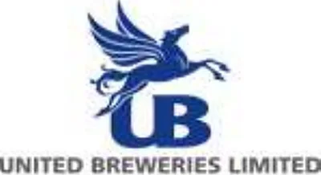

Trained Security Services
Deployment of trained and disciplined security personnel for corporate and residential premises.
Explore service →Integrated security services, facility management and fire safety expertise — built around your people, premises and peace of mind.
From security and emergency readiness to day-to-day facility operations — coordinated solutions from one dedicated team.

Deployment of trained and disciplined security personnel for corporate and residential premises.
Explore service →
Preparedness, fire safety training, emergency evacuation and on-site drills.
Explore service →
Periodic audits, mobile patrolling, monitoring and site-specific security procedures.
Explore service →
Housekeeping, technical staff, operations support and integrated facility solutions.
Explore service →*License status described in the client-provided company profile; verify current details before launch.

Knight Riders Safety Solutions is a growing protection and safety organisation focused on long-term client relationships, professional training and dependable on-site operations.
KRSS brings together security deployment, 72-hour on-the-job training, daily readiness drills and supervisory audits, as described in its company profile.
Meet the KRSS team ↗
Structured oversight, capable people and a strong culture of readiness.
Practical instruction, daily readiness exercises and job-site familiarisation.
Property inspections, night checks and reporting through field leadership.
Training and response planning across fire, evacuation and rescue scenarios.
Security, housekeeping and technical facility support working together.
Inside real KRSS training sessions—from emergency readiness to fire-safety drills and operational briefings.




Our company profile features leading organisations across infrastructure, industry and commercial spaces. Trust is earned through consistent delivery.
Our approach is centred on long-term client relationships, supervision and a trained, disciplined workforce.
— The KRSS service philosophy

Client testimonials will be displayed here after KRSS receives permission to publish verified feedback.
Discuss your requirements